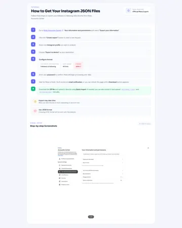
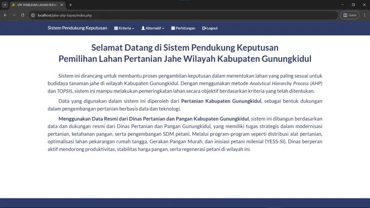

Bookmark Manager
Privacy-first browser bookmark manager with local storage using IndexedDB. Supports folder hierarchy, duplicate detection, and domain analytics.
IT infrastructure professional with 4+ years of experience in technical support, helpdesk operations, incident management, and enterprise systems.
Years in IT
Enterprise Clients
Products Supported
Development Projects
Troubleshooting, incident management, and root cause analysis for enterprise applications.
SLA-driven ticket management and technical assistance for end users.
Functional web apps with HTML, CSS, PHP, and MySQL from design to deployment.
Bridging developers, account managers, and business teams for smooth delivery.
Supporting IT infrastructure operations and maintaining reliable technology environments.
Privacy-first browser bookmark manager with local storage using IndexedDB. Supports folder hierarchy, duplicate detection, and domain analytics.
Browser-based Instagram data analysis app that processes Instagram export files locally without uploading data to any server.
Decision support system to help health agencies determine priority areas for fogging operations based on health and environmental parameters using the TOPSIS method.
Decision support system for comparing ginger farming land in Gunungkidul, using AHP for criteria weighting and TOPSIS for ranking alternatives.
I am open to job opportunities, collaborations, and development projects.
I am an IT professional with a degree in Informatics and experience in customer service, technical support, helpdesk operations, and IT infrastructure. My career has progressed from assisting users to diagnosing technical issues, handling incidents, and supporting enterprise systems. With a foundation in computer networking and system development, I continue to build my technical skills and deliver practical solutions for users and business operations.
Ivosights · Jakarta · hybrid
Supporting IT infrastructure operations and maintaining system reliability for business operations.
Ivosights · Jakarta · hybrid
Handled technical troubleshooting, incident management, tracing, and client support for enterprise products including Sociomile Omni, Sociomile Voice, IVO WABA, and Ripple10 through remote and on-site support.
Ivosights BPO (Karier.mu project)
Provided chat-based customer service, answered user inquiries, and handled issues in line with service procedures.
PT VADS Indonesia (Ajaib project)
Provided customer service through chat, helped users resolve service issues, and shared accurate product information.
PT Yogya Kristal Sejati
Developed a warehouse data management system and supported day-to-day administrative and operational activities.
Nagoya Japanese Fusion Resto
Served customers and supported daily restaurant operations.
Universitas PGRI Yogyakarta · GPA 3.61 / 4.00 · Final Thesis: "Decision Support System for Fogging Area Determination in Jetis District, Yogyakarta."
SMK Tamansiswa Jetis Yogyakarta.
Bachelor's Degree in Informatics — Universitas PGRI Yogyakarta · Graduated 2021 · GPA 3.61 / 4.00
Experience supporting enterprise clients in Indonesia through technical support and helpdesk operations, including incident handling, troubleshooting, and service delivery in line with SLAs.
Certification of English language proficiency — 2019
Digital business skills competency certificate — 2019
Completed secondary education at SMK Tamansiswa Jetis Yogyakarta, majoring in Computer and Network Engineering.
Started my first role as a waiter in the food and beverage industry, developing interpersonal and customer service skills.
Joined the student cooperative at Universitas PGRI Yogyakarta in an administration and public relations role.
Completed an internship at PT Yogya Kristal Sejati in administration and warehouse data system development.
Graduated with a Bachelor's Degree in Informatics from Universitas PGRI Yogyakarta with a GPA of 3.61.
Started a professional career in the customer engagement support field for digital platforms.
Joined Ivosights as a Technical Support specialist, handling troubleshooting, incident management, and client coordination.
Handled implementations and support for Sociomile Omni, Sociomile Voice, IVO WABA, and Ripple10 across national enterprise clients.
Transitioned from Technical Support to the Helpdesk function within the Customer Experience & Growth division, focusing on incident handling, monitoring, troubleshooting, and SLA-driven operations.
Transitioned to an IT Infrastructure role at Ivosights, expanding my professional focus from technical support and helpdesk operations toward IT infrastructure.
Diagnosing application and system issues and using root cause analysis to support incident resolution.
Assisting end users and managing tickets and service requests in line with service-level agreements (SLAs).
Building functional web applications using HTML, CSS, PHP, and MySQL — from requirements analysis and system design through to implementation.
Coordinating with development teams, account managers, and business teams to support service delivery, route escalations, and document issue resolution.
Supporting IT infrastructure operations and maintaining the technology environment required for reliable business operations.
Receiving tickets, reports, or service requests from users through the designated support channel.
Reviewing the initial report to understand the symptoms, impact, and scope of the issue.
Checking system logs, configurations, and related data to identify and isolate the source of the problem.
Providing a direct solution or performing corrective actions to restore normal service operation.
Escalating to the relevant team when the issue requires higher-level expertise or cross-team involvement.
Confirming with the user that the solution is working correctly and that the issue has been fully resolved.
Recording the resolution details and updating the ticket status to maintain accurate service records.
I explore AI-assisted workflows for prompt design, content creation, image enhancement, and task automation. This work focuses on improving efficiency and making digital systems easier to use.
Privacy-first browser bookmark manager with local storage using IndexedDB. Supports folder hierarchy, duplicate detection, and domain analytics.

Browser-based Instagram data analysis app that processes Instagram export files locally without uploading data to any server.
Decision support system to help health agencies determine priority areas for fogging operations based on health and environmental parameters using the TOPSIS method.

Decision support system for comparing ginger farming land in Gunungkidul, using AHP for criteria weighting and TOPSIS for ranking alternatives.
A privacy-first browser bookmark manager with local storage using IndexedDB. Features include bookmark import/export, folder hierarchy, duplicate detection, domain analytics, multi-language support, and dark mode — all processed locally with no server uploads.
Browser-based Instagram data analysis app that processes Instagram export ZIP files entirely on the client side. Features followers analysis, following analysis, fan detection, and local-only processing with zero server uploads.
Web-based decision support system developed to assist health agencies in prioritizing fogging intervention areas using the TOPSIS multi-criteria decision-making method.
An academic decision support application for selecting ginger farming land in Gunungkidul. It includes criteria comparison and consistency checks with AHP, alternative ranking with TOPSIS, and a printable ranking report.
Warehouse data management system developed during an internship at PT Yogya Kristal Sejati to support inventory management and data administration.
Decision support system to help village governments determine eligible recipients for direct cash assistance (BLT) based on established criteria using the TOPSIS method.
Expert system to help users identify pests and diseases in oyster mushroom cultivation and provide handling recommendations.